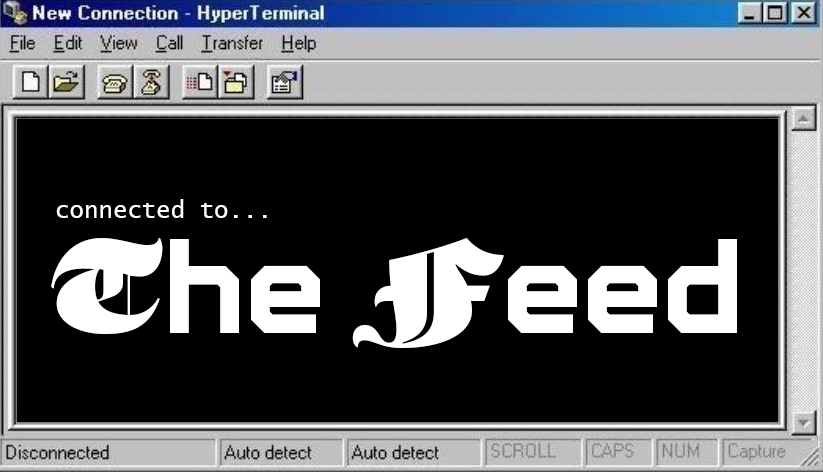
Welcome to my feed, a digital diary of a typical day in my life! From checking emails to doomscrolling on Reels, Enjoy the relaxing ambience of 2000's frutiger aero + metro as you take a step into my internet world.
𓇼 ⋆｡˚ 𓆝⋆｡˚ 𓇼
▀▄▀▄▀▄▀▄▀▄▀▄▀▄▀▄▀▄▀▄▀▄▀▄▀▄▀▄▀▄▀▄▀▄▀▄▀▄▀▄▀▄▀▄▀▄▀▄▀▄▀▄▀▄▀▄▀▄▀▄
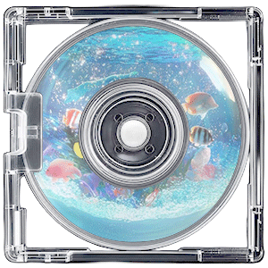
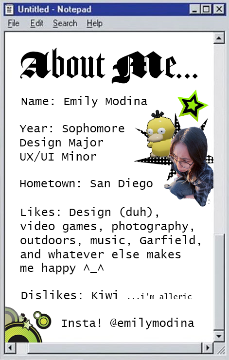
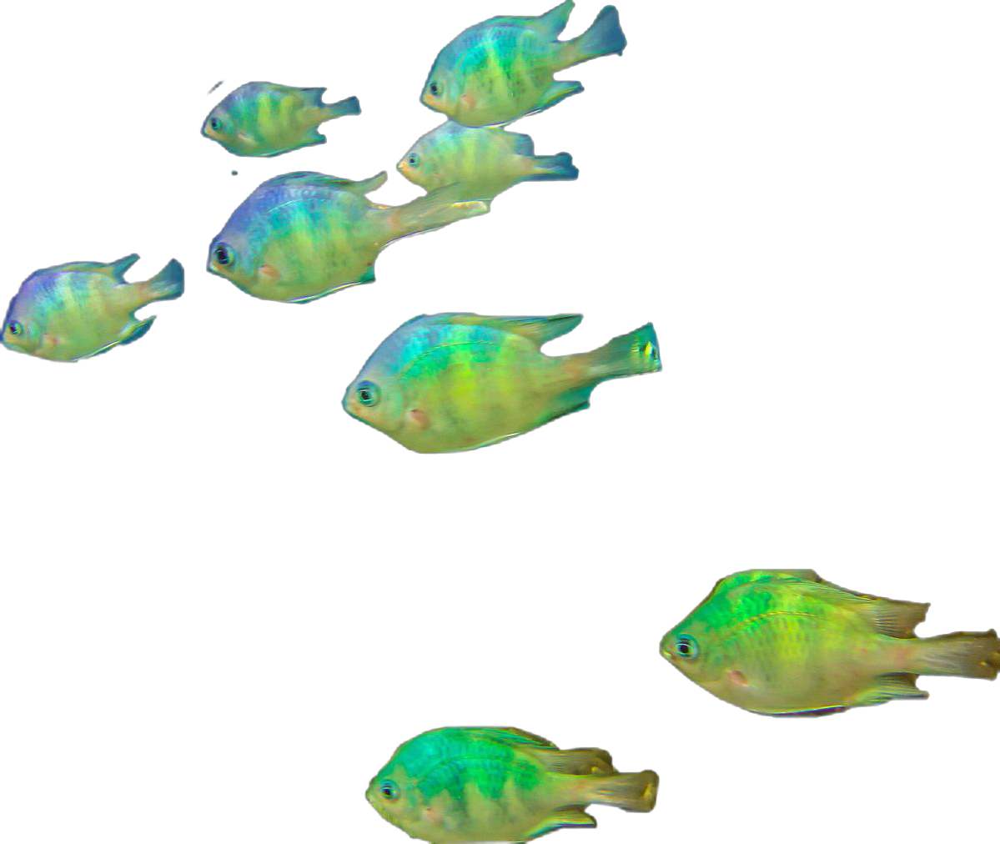
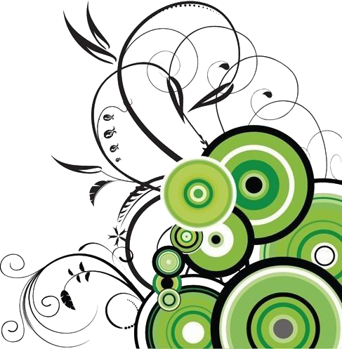
Waking Up
because it's labor day with no school, my alarm goes off at 11am. i turn on my phone to check on the notifications i recieved while i was sleeping, and also decide if i need to respond to any at the moment. my usual notifs come from gmail, messages, snapchat, instagram, and sometimes reminders if i have stuff planned for the day.
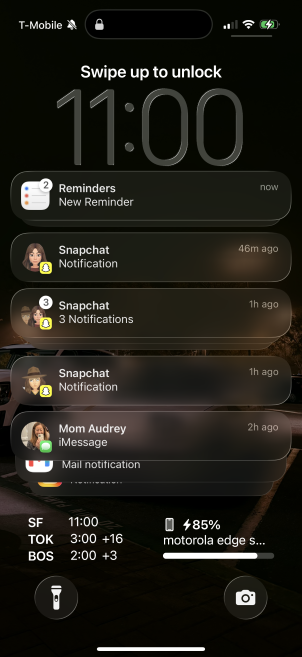
Alarms
i then go straight to my clock app and to my alarms. for weekends, i'll keep another alarm active 30 minutes from my inital alarm in case i fall back asleep and need that extra "push". since i have classes tomorrow, i turn back on my two school alarms at the top of the list.
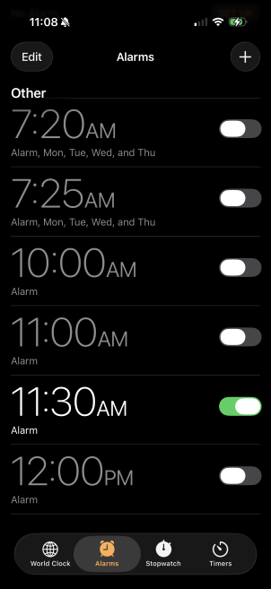
Check Emails
as part of my "adult" routine, i thoroughly-ish check my emails every morning. i'm pretty good at keeping my emails up-to-date! most of the time it's just deleting random emails i don't need, and skimming over important ones to care about later on in the day.
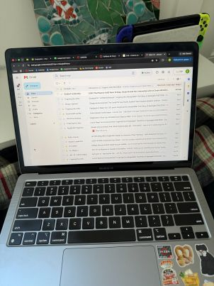
Lunch Time
because i wake up late, i skip breakfast and either make or find leftovers for my lunch. i love to watch videos while i eat, and i tend to choose longer videos for the sake of it. sometimes i'll tune into livestreams instead, but nobody i watch is usually streaming this "early".
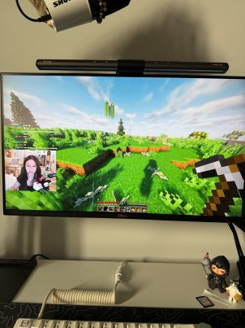
Practice Guitar
after i finish eating lunch and watching my video, i spend the next couple of hours doing whatever i want. today i decided to practice guitar, and i use Songsterr to learn songs! this is my first year learning guitar, so i aim for 5-15 minutes a day of practice. i spent around 2 hours today as i had plenty of free time.
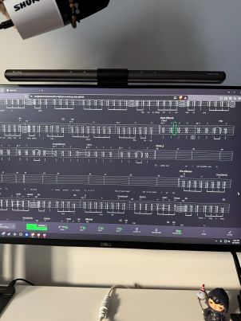
Shopping
since i just went to the BTS concert last week, i've been trying to find this zip-up hoodie merch in my size because they ran out at the concert and i had to buy it 2x the size i usually wear. i spent some time looking for sellers and traders online, and checking for restocks on Weverse, the official merch website. i keep telling myself it's not that serious, but what can i say...!
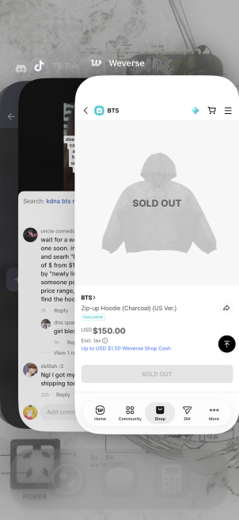
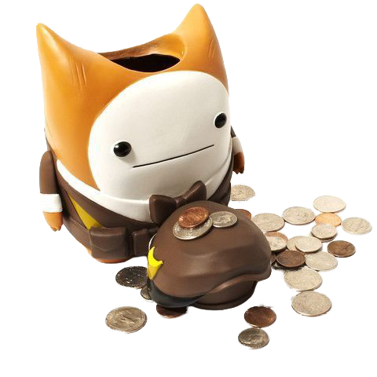
Exercise
it's time to get out and go outside! my roommate and i planned to go on a walk, so i checked the weather before getting ready. we were going to walk down to the beach as our apartment is in outer sunset. yeah, i don't live too close to usf unfortunately...
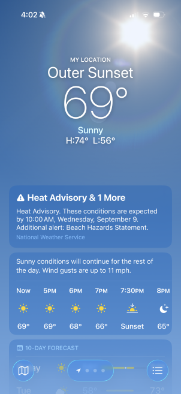
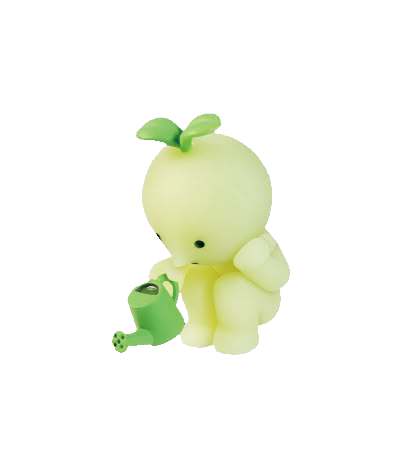
TikTok
i haven't started walking yet. my social media addiction is crazy bad right now so i just had to spend a few minutes on TikTok and doomscroll. if it's not so obvious, my fyp is filled with BTS concert clips right now. hopefully it'll change back to normal in a few days!
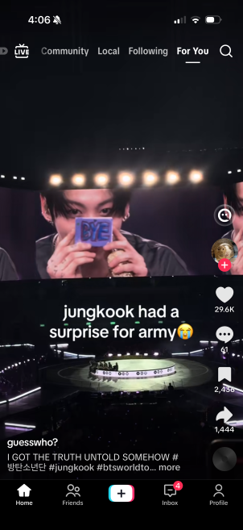
After Walk
now that my walk was over, i rested for a bit on TikTok, again. however, there was some bad news. my friend and i's 301-day streak pet named poster died ¬_¬ this isn't the first time either... but, a new one has been hatched! i named it soufflé.
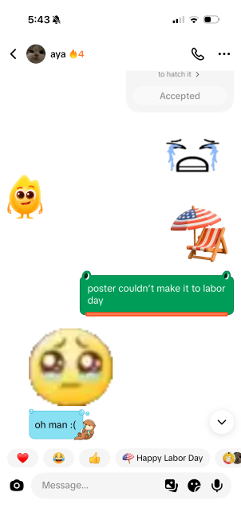
Dinner Time
for dinner, i like to listen to music as i cook. today, it was going to be a longer cooking session as i had to meal prep for the week as well. although having a ton of spotify playlists, i usually listen to my "currents" playlist that has all of the songs i enjoy listening to at the moment.
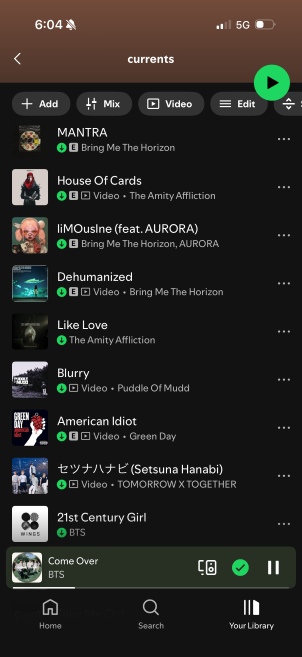
Homework
once dinner is done and i've showered, the rest of the night is generally dedicated to homework. i had to finish some coding and submitted, and started homework for other classes too. it's also really important for me to check through my Canvas calendar, and i use a Google Spreadsheet to keep track of all my assignments.
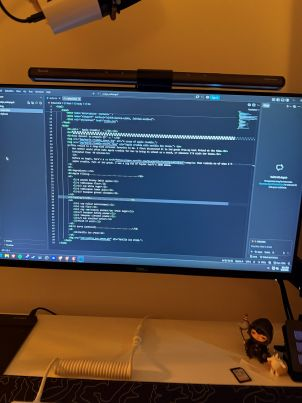
Instagram pt. 1
i didn't have too much homework, so for the last few hours before i go to bed i went to doomscrolling again. this time, it's on instagram reels because i'm hardcore like that. it's not a good habit. but, i usually just watch the reels my friends send me and send a few back!
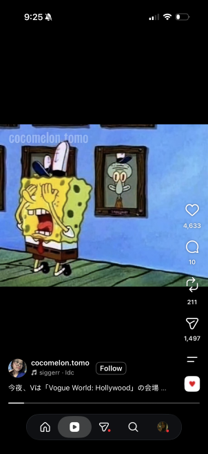
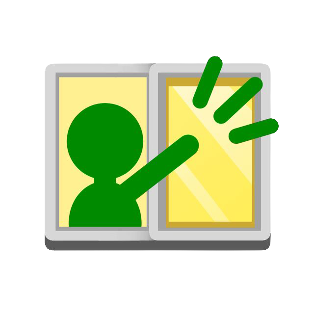
Instagram pt. 2
other than just watching slop on reels, i'll come across recipes for cooking at home and for meal prepping for school! instagram and tiktok both have pretty good suggestions, and i save each one in a collection so i can look at it in the future for new recipes to try.
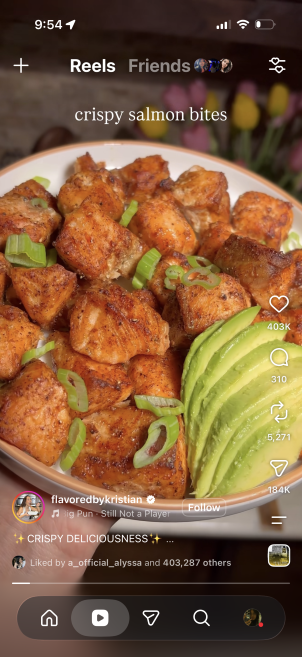